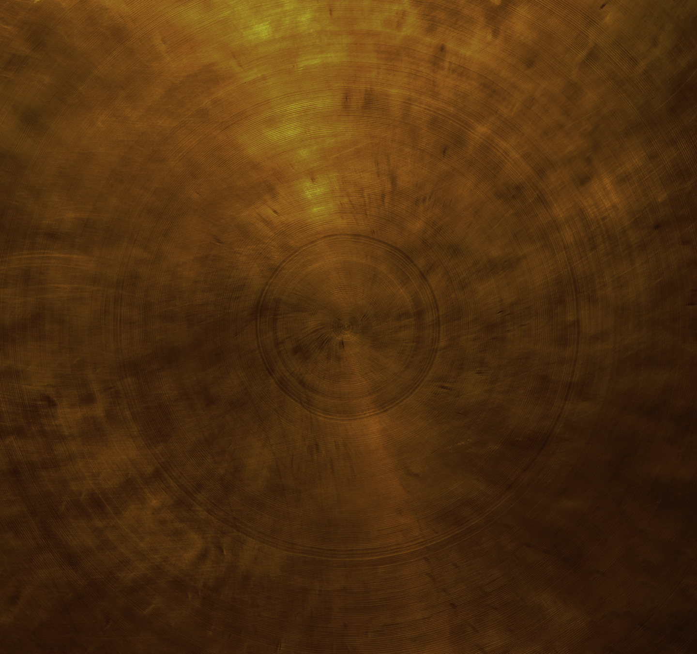

Presence
Chậm lại để lắng nghe những gì
đang diễn ra bên trong.
ALAYA WELLNESS · HIMALAYAN SINGING BOWL
Một khoảng lặng để bạn chậm lại, lắng nghe cơ thể
và trở về với chính mình.
A SPACE TO SIMPLY BE.
01 / HIMALAYAN SINGING BOWL THERAPY

Trong không gian tĩnh, âm thanh và rung động từ chuông xoay mở ra một khoảng thời gian để bạn thả lỏng, lắng nghe cơ thể và chú ý đến cảm nhận của mình.
02 / OUR PHILOSOPHY
ALAYA tạo ra những khoảnh khắc
để bạn soi thấy chính mình.
Chậm lại để lắng nghe những gì
đang diễn ra bên trong.
Được nâng đỡ mà không bị
thúc ép hay phán xét.
Khi mọi thứ dịu xuống, bạn có thể
nhìn thấy mình rõ hơn.
03 / OUR EXPERIENCES
Nghỉ ngơi, lắng nghe và trở về với chính mình.
04 / YOUR MOMENT
Bạn không cần biết ngay liệu trình nào phù hợp.
Hãy bắt đầu bằng một cuộc trò chuyện với ALAYA.
Thông tin đặt lịch sẽ được cập nhật.